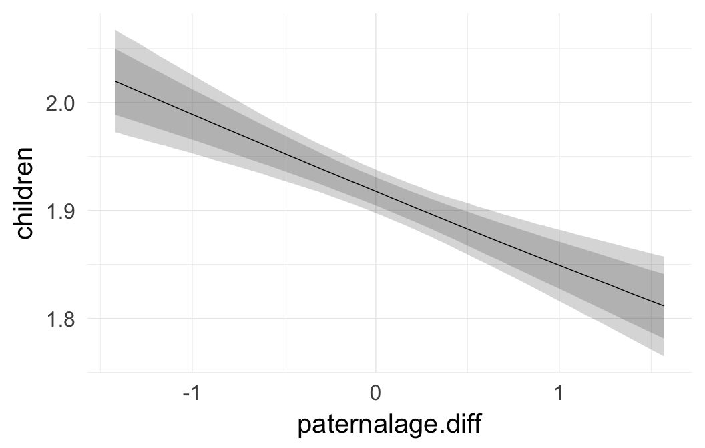

20th century Sweden robustness analyses
Loading details
source("0__helpers.R")
opts_chunk$set(warning=TRUE, cache=F,cache.lazy=F,tidy=FALSE,autodep=TRUE,dev=c('png','pdf'),fig.width=20,fig.height=12.5,out.width='1440px',out.height='900px',cache.extra=file.info('swed1.rdata')[, 'mtime'])
make_path = function(file) {
get_coefficient_path(file, "swed")
}
# options for each chunk calling knit_child
opts_chunk$set(warning=FALSE, message = FALSE, echo = FALSE)Analysis description
Data subset
The swed_subset_children.1 dataset is based on the full dataset of all participants where paternal age is known and birth years are from 1947 to 1959. The subset contains 88707 randomly drawn participants from 56679 families.
Model description
All of the following models are the same as our main model m3, except for the noted changes to test robustness.
r1: Relaxed exclusion criteria
For the four historical populations, we imposed quite stringent exclusion criteria to ensure sufficient data quality for our intended analysis. As this was not necessary for the modern Swedish data, there are no exclusion criteria to relax.
r2: Fewer covariates
Adding covariates increases the complexity of the model and makes it harder to interpret. We chose to adjust for many potential confounds because we are interested in causal isolation of the paternal age effect. Here we show what happens when only birth cohort and anchor sex are adjusted for.
Model summary
Full summary
model_summary = summary(model, use_cache = FALSE)
print(model_summary)## Family: poisson (log)
## Formula: children ~ paternalage.diff + birth_cohort + male + paternalage.mean + (1 | idParents)
## Data: model_data (Number of observations: 88707)
## Samples: 6 chains, each with iter = 800; warmup = 300; thin = 1;
## total post-warmup samples = 3000
## WAIC: Not computed
##
## Group-Level Effects:
## ~idParents (Number of levels: 56679)
## Estimate Est.Error l-95% CI u-95% CI Eff.Sample Rhat
## sd(Intercept) 0.01 0.01 0 0.03 247 1.01
##
## Population-Level Effects:
## Estimate Est.Error l-95% CI u-95% CI Eff.Sample Rhat
## Intercept 0.65 0.01 0.64 0.66 3000 1
## paternalage.diff -0.04 0.01 -0.05 -0.02 3000 1
## birth_cohort1950M1955 0.00 0.01 -0.01 0.01 3000 1
## birth_cohort1955M1960 -0.01 0.01 -0.03 0.00 3000 1
## male1 -0.06 0.00 -0.07 -0.05 3000 1
## paternalage.mean -0.03 0.00 -0.04 -0.02 3000 1
##
## Samples were drawn using sampling(NUTS). For each parameter, Eff.Sample
## is a crude measure of effective sample size, and Rhat is the potential
## scale reduction factor on split chains (at convergence, Rhat = 1).Table of fixed effects
fixed_eff = data.frame(model_summary$fixed, check.names = F)
fixed_eff$Est.Error = fixed_eff$Eff.Sample = fixed_eff$Rhat = NULL
fixed_eff$OR = exp(fixed_eff$Estimate)
fixed_eff$OR_low = exp(fixed_eff$`l-95% CI`)
fixed_eff$OR_high = exp(fixed_eff$`u-95% CI`)
pander::pander(fixed_eff)| Â | Estimate | l-95% CI | u-95% CI | OR | OR_low | OR_high |
|---|---|---|---|---|---|---|
| Intercept | 0.6519 | 0.6413 | 0.6623 | 1.919 | 1.899 | 1.939 |
| paternalage.diff | -0.03644 | -0.05117 | -0.02178 | 0.9642 | 0.9501 | 0.9785 |
| birth_cohort1950M1955 | -0.0003772 | -0.01225 | 0.01163 | 0.9996 | 0.9878 | 1.012 |
| birth_cohort1955M1960 | -0.013 | -0.02548 | -7.683e-05 | 0.9871 | 0.9748 | 0.9999 |
| male1 | -0.05733 | -0.06702 | -0.04722 | 0.9443 | 0.9352 | 0.9539 |
| paternalage.mean | -0.03028 | -0.03846 | -0.02188 | 0.9702 | 0.9623 | 0.9784 |
Paternal age effect
pander::pander(paternal_age_10y_effect(model))| effect | median_estimate | ci_95 | ci_80 |
|---|---|---|---|
| estimate father -5y | 1.96 | [1.93;1.98] | [1.94;1.97] |
| estimate father +5y | 1.89 | [1.86;1.91] | [1.87;1.9] |
| percentage change | -3.6 | [-5;-2.2] | [-4.5;-2.6] |
| absolute change for reference individual | -0.07 | [-0.1;-0.04] | [-0.09;-0.05] |
Marginal effect plots
plot.brmsMarginalEffects_shades(
x = marginal_effects(model, re_formula = NA, probs = c(0.025,0.975)),
y = marginal_effects(model, re_formula = NA, probs = c(0.1,0.9)),
ask = FALSE)
Coefficient plot
Coefficient estimates (95% and 80% credibility).
mcmc_intervals(as.matrix(model$fit), regex_pars = "b_[^I]")mcmc_areas(as.matrix(model$fit), regex_pars = "b")Diagnostics
These plots were made to diagnose misfit and nonconvergence.
Posterior predictive checks
brms::pp_check(model, re_formula = NA, type = "dens_overlay")brms::pp_check(model, re_formula = NA, type = "hist")
Rhat
Did the 6 chains converge?
stanplot(model, pars = "^b_[^I]", type = 'rhat')Effective sample size by average sample size
stanplot(model, pars = "^b", type = 'ess')Monte Carlo SE
stanplot(model, pars = "^b", type = 'mcse')Trace plots
if(any( summary(model)$fixed[,"Rhat"] > 1.1)) { # only do traceplots if not converged
plot(model, N = 3, ask = FALSE)
}Further plots
stanplot(model, pars = "^b", type = 'diag')File name
coefs/swed/r2_few_controls.rds
Cluster script
clusterscript = str_replace(basename(model_filename), "\\.rds",".html")
cat("[Cluster script](" , clusterscript, ")", sep = "")opts_chunk$set(results = "asis", echo = FALSE)